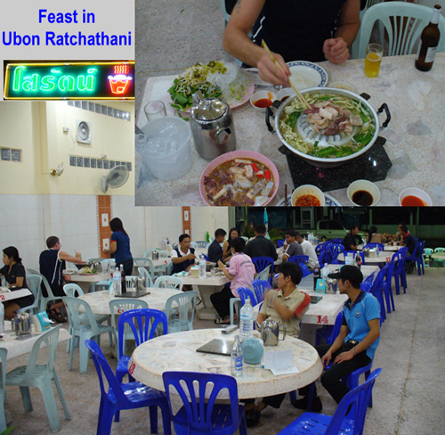
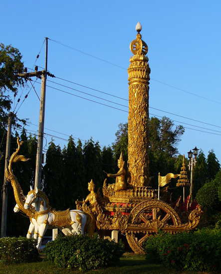
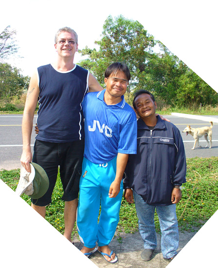

November 29, 2005
Crossed back into Thailand yesterday at Chong Mek, and shared a van with several other backpackers heading to the Ubon Ratchathani train station some 75 kilometers away. Audun (a self-described Punk Rocker from Norway) and I decide to spend the night as we found a place with a couple of rather cheap singles. After cleaning up, we walk the town finding an interesting statue, Internet, and a fantastic place for dinner. The latter was a seafood place where every customer gets the same meal, cooked on your table. That's Audun sitting next to the wall in the composite photo to the right.
The next morning we take the train to Si Saket, from where we head south by bus and motorcycle to the Cambodian border. It's the only logical way to see the Anchor period ruins of Khao Phra Wihaan, but more on that in the next Trav-E-Log.
 
Bill